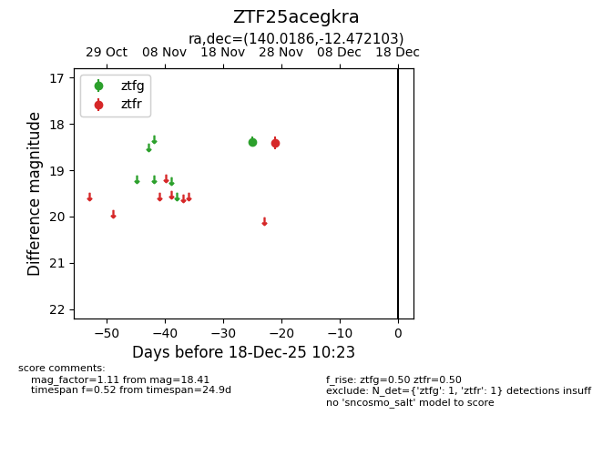
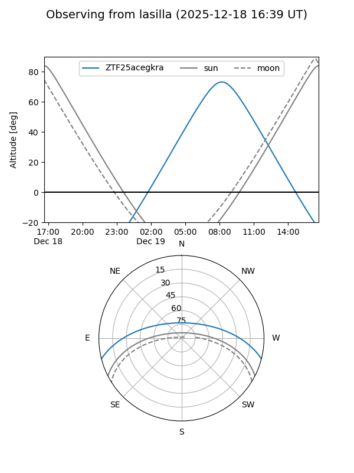
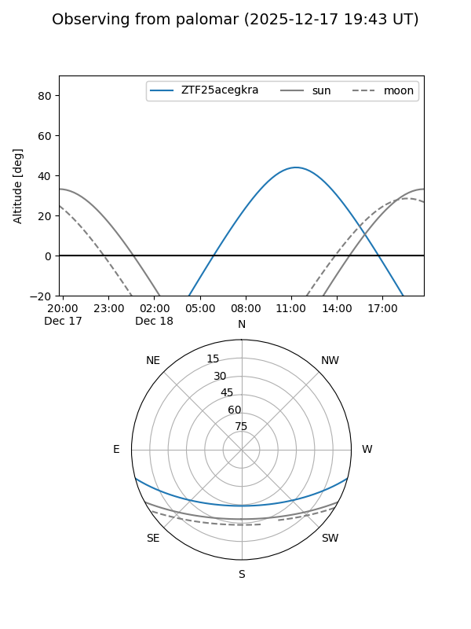

ZTF25acegkra
Target ZTF25acegkra at 2025-12-18 11:17
Aliases and brokers:
FINK: fink-portal.org/ZTF25acegkra
Lasair: lasair-ztf.lsst.ac.uk/objects/ZTF25acegkra
ALeRCE: alerce.online/object/ZTF25acegkra
alt names
ZTF25acegkra (ztf,fink_ztf)
Coordinates:
equatorial (ra, dec) = 140.0186,-12.47210
equatorial (HMS+DMS) = 09:20:04.46,-12:28:19.57
galactic (l, b) = (243.5829,+25.24042)
Photometry
last ztfg=18.38, ztfr=18.41
1 ztfg, 1 ztfr detections
Lightcurve

Visibility


Additional plots